角色介紹
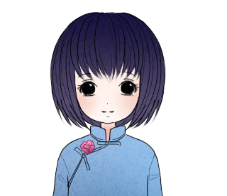
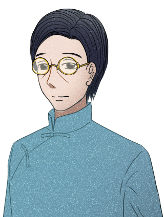
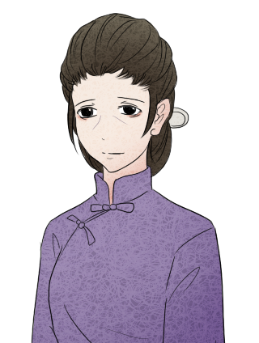
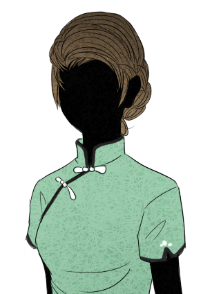
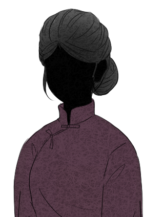
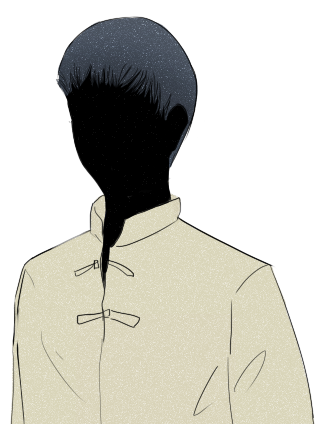
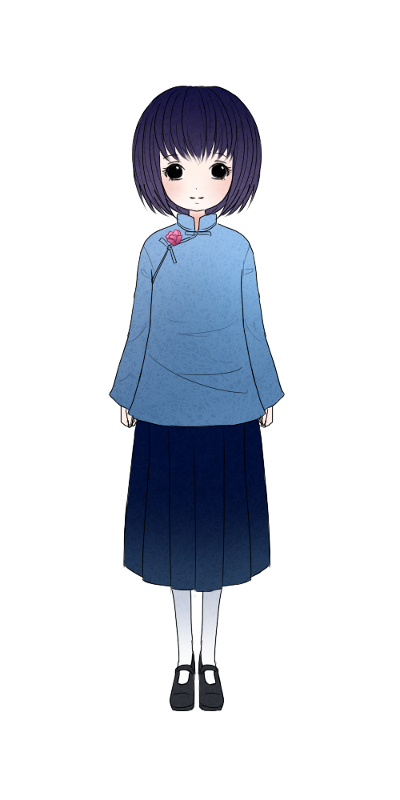
英子
• 《城南舊事》的小女主角，也就是作者林海音的童年代表。
• 個性：小孩→沉穩、負責
• 生活方式：有時會賴床不想去上學，因父親的教誨，之後一直到畢業為止六年都是最早到的學生。
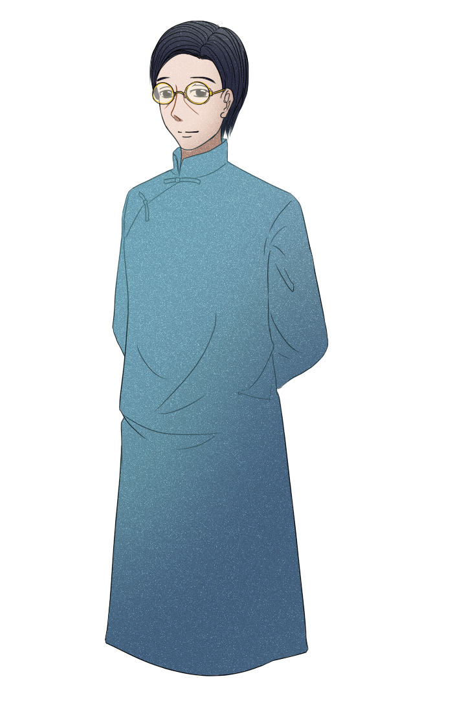
父親
• 身分：英子的父親林煥文，年紀四十四歲。
• 個性：是位嚴父，也是位慈父。
• 生活方式：是個熱心助人，不吝金錢的人，因此家裡常有客人借宿。
• 病逝於此年。
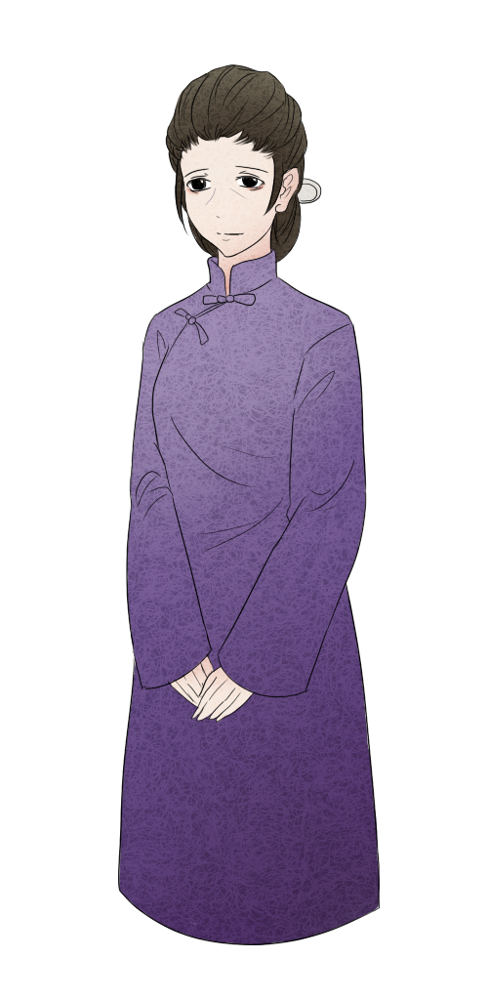
母親
• 身分：英子的父親黃愛真。
• 個性：中國傳統女性的典型代表──吃苦耐勞、賢慧。
瘦雞妹妹
• 身分：英子最小的五妹燕玢。
• 因為長得很瘦，小手像瘦雞子，所以英子如此叫她
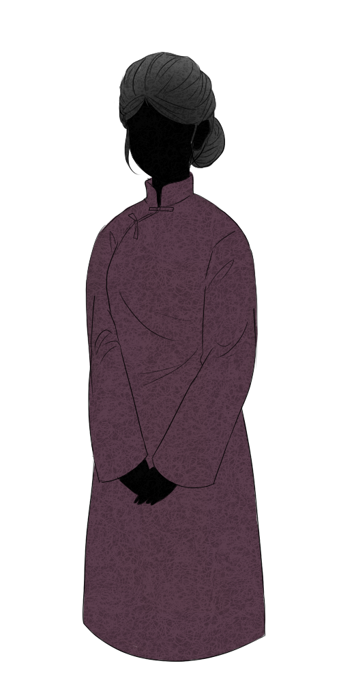
宋媽
• 身分：在林家幫忙的傭人。
• 原本是英子大弟燕生的奶媽，後來因為林家孩子眾多便留在林家六、七年之久，幫忙英子母親照顧孩子。
<事見《城南舊事》〈驢打滾兒〉>
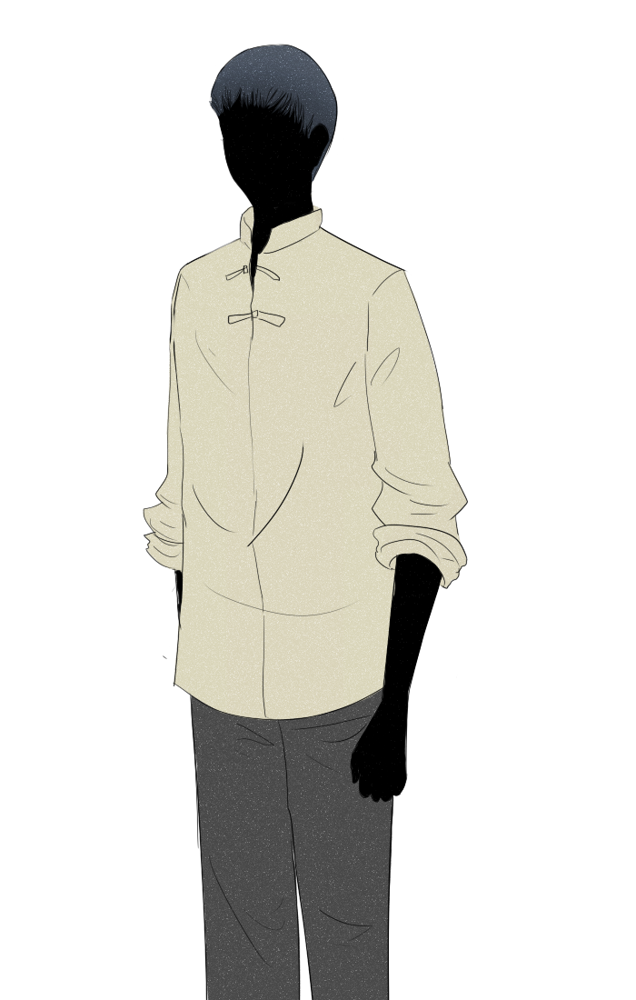
蹲在草地裡的那個人
• 身分：英子小時候在家附近草叢遇見的一個人。
• 英子並不清楚他是小偷，兩人聊天聊得很開心。
<事見《城南舊事》〈我們看海去〉>
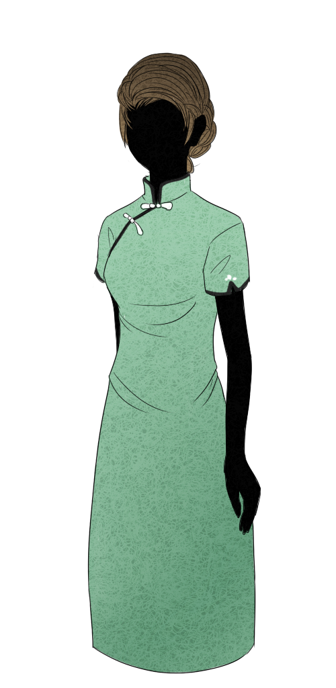
蘭姨娘
• 身分：林家好心收留的一位逃家的姨太太。
<事見《城南舊事》〈蘭姨娘〉>
四眼狗
• 身分：英子的得先叔。
• 在北京大學念書的臺灣學生，常來林家喝酒聊天，因為戴眼鏡，故有「四眼狗」的綽號。
<事見《城南舊事》〈蘭姨娘〉>